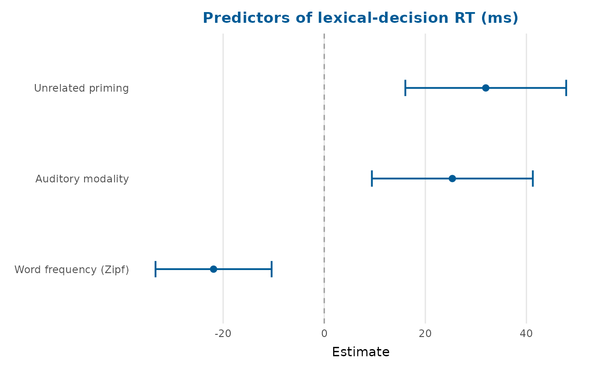
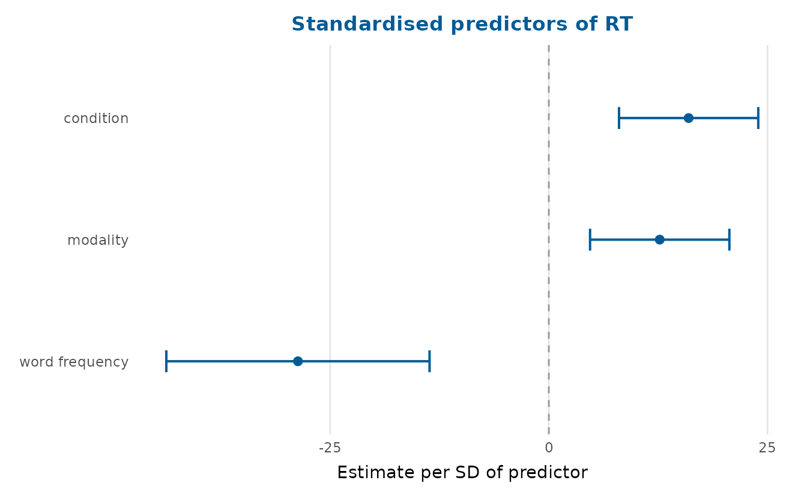
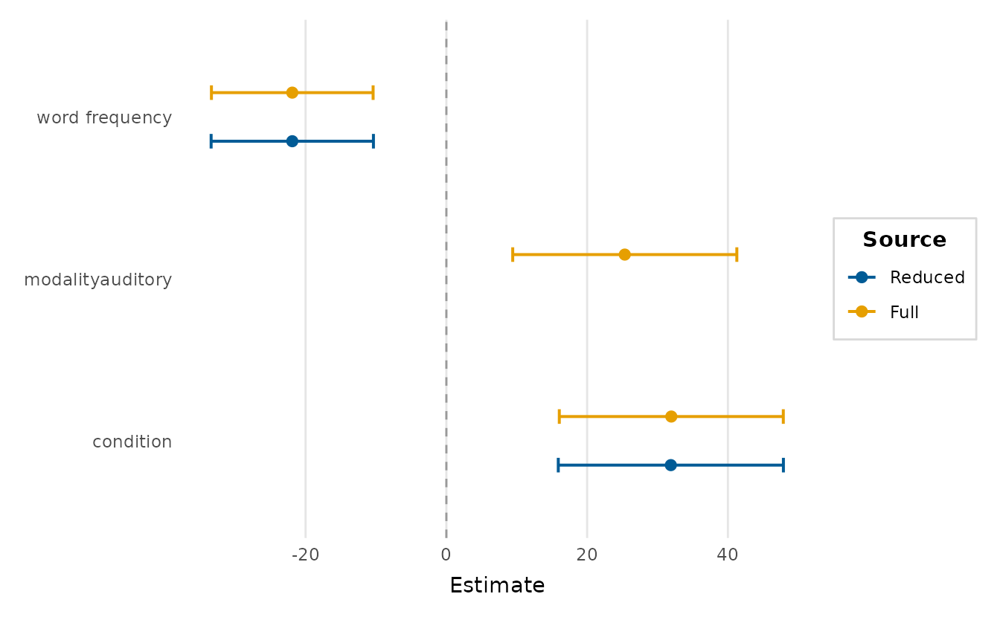
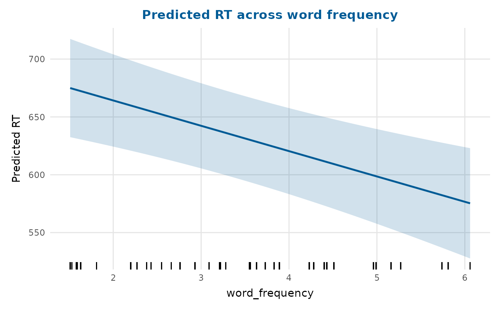
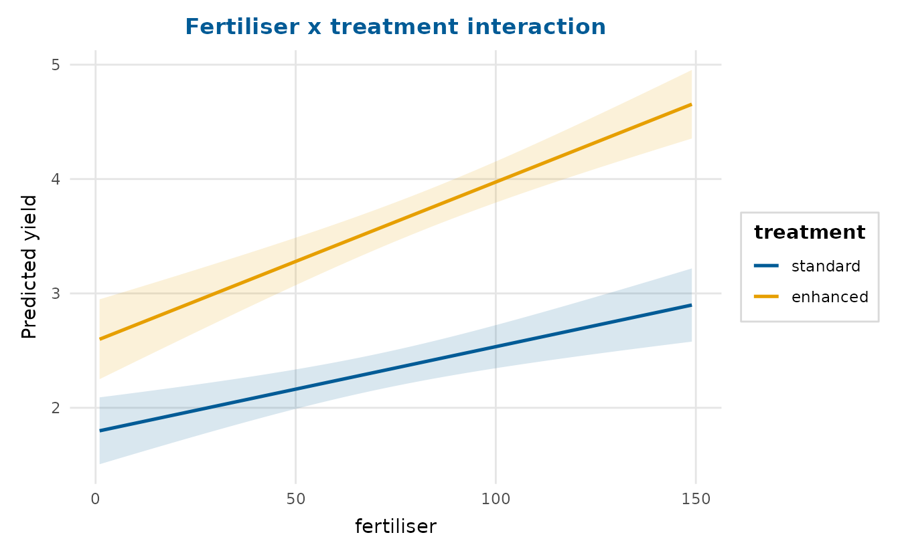
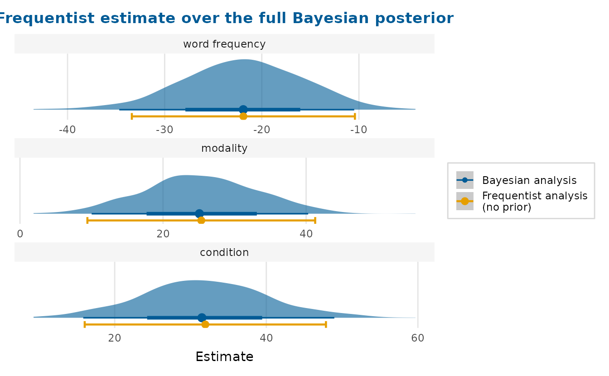
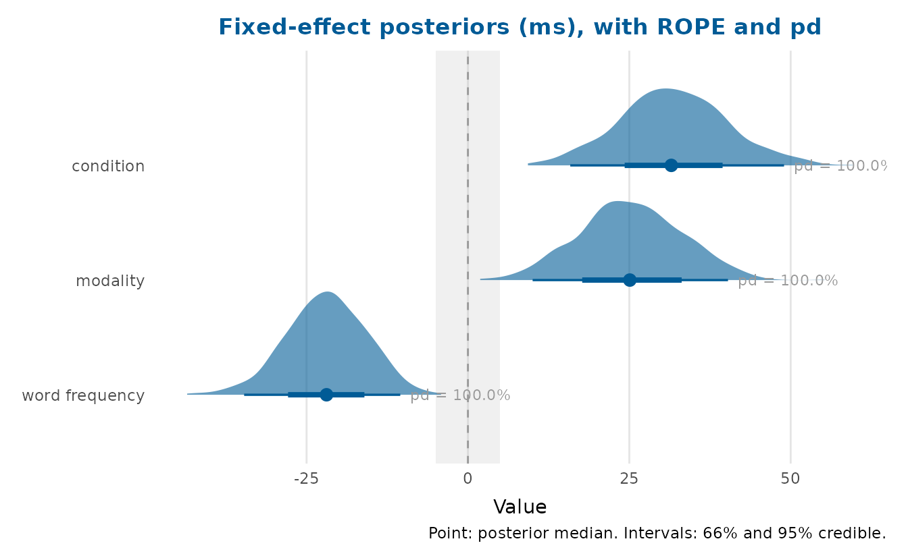
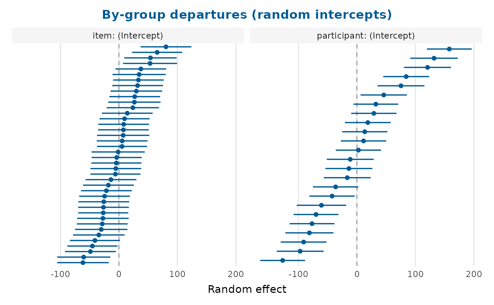
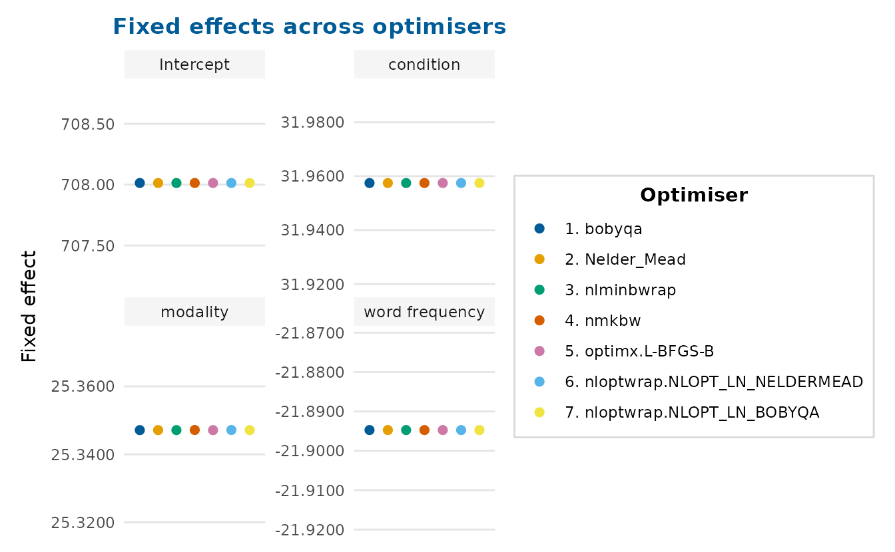
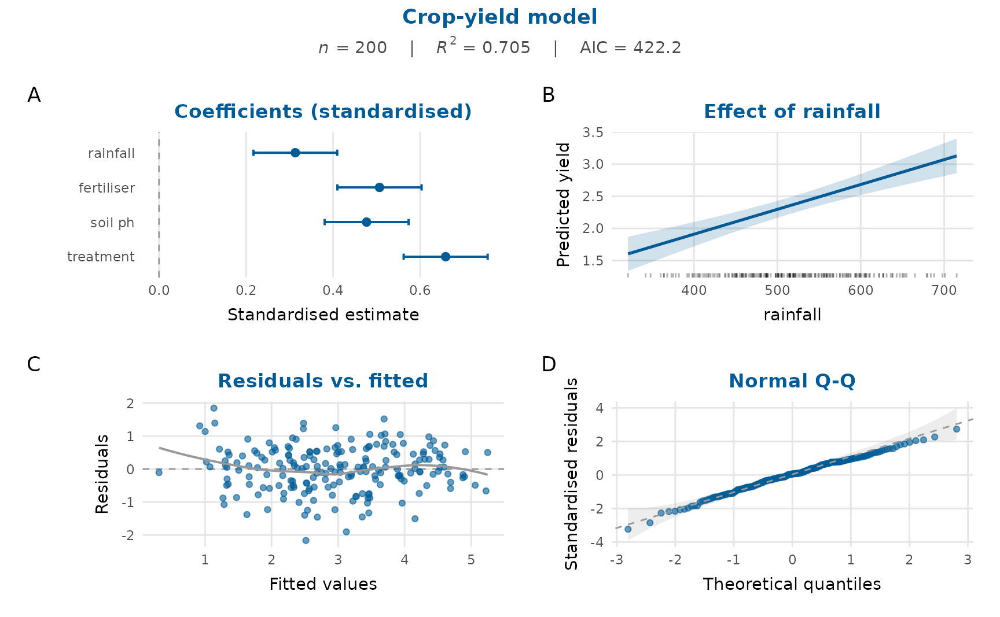

This is the flagship article. It works through depictr’s model-result
plots (coefficients, model comparison, predicted values, interactions,
random effects and goodness-of-fit) and then reaches the capability that
frequentist_bayesian_plot() is named for: showing a
frequentist estimate and a full Bayesian posterior for the same model on
one figure.
The running example is lexical_decision, a
counterbalanced, crossed lexical-decision experiment (24 participants,
40 items, 960 trials). We model reaction time on correct trials as a
function of priming condition (related/unrelated),
presentation modality (visual/auditory) and item
word_frequency, with crossed random intercepts for
participant and item. The design is counterbalanced, so neither fixed
factor is collinear with the item random effect, a clean fit for a mixed
model.
correct <- subset(lexical_decision, accuracy == 1)
fit <- lmerTest::lmer(
RT ~ condition + modality + word_frequency +
(1 | participant) + (1 | item),
data = correct
)Coefficient (forest) plots
coefficient_plot() reads the fitted mixed model directly
(through tidy_estimates()) and draws a horizontal
point-and-interval (‘forest’) plot. Unrelated primes and auditory
presentation both slow responses, while more frequent words speed them
up.
coefficient_plot(
fit, order = "ascending",
labels = c(conditionunrelated = "Unrelated priming",
modalityauditory = "Auditory modality",
word_frequency = "Word frequency (Zipf)"),
title = "Predictors of lexical-decision RT (ms)"
)
Coefficient names are tidied to the effect (variable) name
automatically (conditionunrelated becomes
condition, word_frequency becomes
word frequency); pass labels to override any
of them. The slopes also sit on quite different scales, so
standardise = TRUE rescales each coefficient by its
predictor’s standard deviation, putting them on one comparable axis:
coefficient_plot(fit, standardise = TRUE, order = "ascending",
title = "Standardised predictors of RT")
To keep the raw units instead, including a large intercept that would
otherwise squash the slopes, facet = TRUE gives each term
its own free-scaled panel (the layout the frequentist-vs-Bayesian
comparison below uses by default).
Comparing models
compare_models() overlays the estimates from several
models so you can see how a coefficient moves as the specification
changes. Here a reduced model (dropping modality) is
compared with the full model; model_fit_table() summarises
their fit.
reduced <- lmerTest::lmer(
RT ~ condition + word_frequency + (1 | participant) + (1 | item),
data = correct
)
compare_models(Reduced = reduced, Full = fit, order = "descending")
knitr::kable(model_fit_table(Reduced = reduced, Full = fit))| model | n | df | AIC | BIC | logLik | R2 | RMSE |
|---|---|---|---|---|---|---|---|
| Reduced | 902 | 6 | 11338.03 | 11366.85 | -5663.014 | NA | 118.790 |
| Full | 902 | 7 | 11324.31 | 11357.94 | -5655.153 | NA | 118.129 |
For glm models the R2 column reports
McFadden’s pseudo-R-squared (McFadden, 1974) in place of the
ordinary coefficient of determination.
Predicted values and interactions
effects_plot() shows what the model predicts as one
predictor varies, holding the others at typical values. It also works on
the mixed model: predictions use the fixed effects only
(re.form = NA) and the band is built from the fixed-effect
design matrix and vcov().
effects_plot(fit, "word_frequency",
title = "Predicted RT across word frequency")
interaction_plot() shows how a relationship changes
across a second predictor. The lexical-decision model is additive, so
for a genuine interaction we switch to crop_yield,
whose data-generating process contains a real fertiliser-by-treatment
effect: fertiliser raises yield far more under the enhanced
treatment than under standard, so the slopes diverge.
crop_fit <- lm(yield ~ fertiliser * treatment + rainfall, data = crop_yield)
interaction_plot(crop_fit, "fertiliser", "treatment",
title = "Fertiliser x treatment interaction")
Frequentist and Bayesian estimates together
This is the capability frequentist_bayesian_plot() is
named for. Given the frequentist fit and a set of Bayesian posterior
draws, the function draws the full posterior distribution for
each term (a ‘ggdist’ half-eye) and overlays the frequentist point and
confidence interval at the same position. The entire shape of the
posterior appears next to the frequentist estimate, rather than a point
and two limits alone, with the two sources in the two leading
colourblind-safe palette colours.
The draws here are the real fixed-effect posterior from a
brms fit of the same model (1000 draws x 4 parameters),
shipped with the package so the slow MCMC need not be re-run. Terms are
matched by canonical label, so the brms parameter names
line up with the frequentist ones automatically.
draws <- readRDS(system.file("extdata", "lexdec_draws.rds", package = "depictr"))
frequentist_bayesian_plot(
fit, draws,
intercept = FALSE,
note_frequentist_no_prior = TRUE,
title = "Frequentist estimate over the full Bayesian posterior"
)
The frequentist confidence interval and the bulk of the Bayesian posterior land in the same place (reassuring agreement between the two paradigms), but only the posterior shows the density, the skew and the mass on either side of zero.
If ggdist is unavailable the function falls back to a
point-and-interval forest plot of the two sources, and when the Bayesian
side is supplied as a summary table instead of draws (for
instance the Estimate/Q2.5/Q97.5
of brms::fixef()) it draws the familiar two-source forest
plot.
Posterior distributions on their own
posterior_plot() summarises any draws (posterior,
bootstrap or simulation) as a distribution per parameter. With
style = "halfeye" it shows the density slab and a
point-and-interval; a region of practical equivalence (ROPE) can be
shaded and each parameter annotated with its probability of direction
(the posterior mass on its majority side of the reference line).
draws <- readRDS(system.file("extdata", "lexdec_draws.rds", package = "depictr"))
slopes <- draws[c("conditionunrelated", "modalityauditory", "word_frequency")]
posterior_plot(
slopes, style = "halfeye", rope = c(-5, 5), pd = TRUE,
labels = c(conditionunrelated = "condition",
modalityauditory = "modality",
word_frequency = "word frequency"),
title = "Fixed-effect posteriors (ms), with ROPE and pd"
)
The probability of direction for word_frequency and
conditionunrelated is effectively 100%: the posterior sits
almost entirely on one side of zero.
Random effects
random_effects_plot() draws a caterpillar plot of the
conditional modes (‘BLUPs’). Reading the fitted model directly, it shows
the by-item and by-participant departures from the average, sorted, with
their uncertainty, the usual way to spot unusual groups.
random_effects_plot(fit, title = "By-group departures (random intercepts)")
Optimiser checks
A mixed-model fit should be stable across optimisers.
lme4::allFit() refits the model with every available
optimiser; optimizer_fixef_plot() then shows the fixed
effects side by side, one panel per term. Tight clusters mean the fit
has settled; scatter would signal a fragile solution.
The package ships the allFit() summary for this model,
so we can plot it without re-running the (slow) refits. The plot accepts
a tidy data frame of optimiser-by-term values, which we read straight
off the stored summary.
af <- readRDS(system.file("extdata", "allfit_lexdec.rds", package = "depictr"))
fx <- af$fixef # optimisers x fixed effects
opt_long <- data.frame(
optimizer = rep(rownames(fx), times = ncol(fx)),
term = rep(colnames(fx), each = nrow(fx)),
value = as.vector(fx)
)
optimizer_fixef_plot(
opt_long, title = "Fixed effects across optimisers",
labels = c(conditionunrelated = "condition",
modalityauditory = "modality",
word_frequency = "word frequency")
)
Every optimiser lands on the same estimate for each term (the points coincide within each panel), so this fit is stable.
A one-figure model report
model_report() composes several views (coefficients, the
effect of a focal predictor, residuals against fitted values and a Q-Q
plot, with a fit-statistics subtitle) into a single figure for a rapid
review or a report appendix. It works on
lm/glm models; here we use the crop-yield
model.
full <- lm(yield ~ rainfall + fertiliser + soil_ph + treatment,
data = crop_yield)
model_report(full, title = "Crop-yield model")